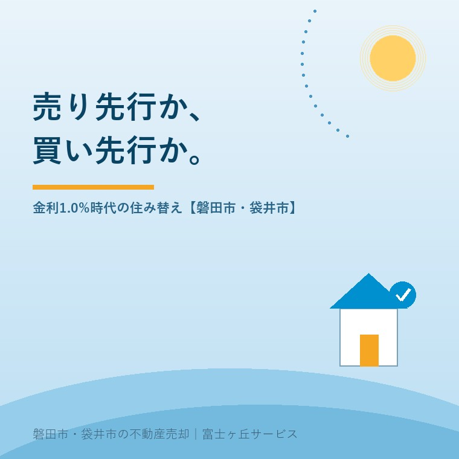

2026年8月27日｜カテゴリ：住み替え／資金計画

この記事の要点
Q. 住み替えたいのですが、今の家を売るのが先ですか、新しい家を買うのが先ですか。
A. 手元資金に余裕がなければ、売り先行です。買い先行は旧宅の維持費と新居のローンが重なる期間が読めません。誘導目標は2026年6月に1.0％程度へ上がり、短期プライムレートも8月に2.375％になりました。重なる期間の値段が上がっています。
磐田市・袋井市・森町では、介護施設の運営から不動産事業を始めた富士ヶ丘サービスのような「介護×不動産」専門の会社に相談するという選択肢があります。
住み替えのご相談は、たいてい同じ質問から始まります。売るのが先か、買うのが先か。教科書的な答えは「資金に余裕があれば買い先行、なければ売り先行」ですが、この一年で判断の重みが変わりました。借入の値段が上がったからです。
この記事は2026年8月27日時点で、日本銀行「金融市場調節方針の変更について」（2026年6月16日公表）、同「長・短期プライムレート（主要行）の推移」、住宅金融支援機構【フラット35】の借入金利、国土交通省「不動産価格指数」を確認して書いています。扱うのは売り先行と買い先行の違いを、費用と期間に割り戻して比べることです。
売り先行は今の家の売却金額を先に確定させ、買い先行は次の住まいを先に確定させます。どちらも「先に決めたほうが有利になり、後回しにしたほうが不利になる」という構造です。
| 売り先行 | 買い先行 | |
|---|---|---|
| 先に確定するもの | 売却金額と入金日 | 次に住む家 |
| 資金計画 | 立てやすい。頭金の額が確定する | 立てにくい。売却額を見込みで置く |
| 売る側の立場 | 期限に追われず、値下げを急がなくてよい | 期限があるため指値が通りやすくなる |
| 住まいの手当て | 仮住まいと引越しが2回になることがある | 1回で済む |
| 重なる費用 | 仮住まいの家賃・引越し費用 | 旧宅の維持費＋新居のローン |
| 使う道具 | 引渡し猶予の特約、買取 | 買い替え特約、つなぎ融資 |
表の下2行が、金利が上がると効いてくる部分です。売り先行の重なる費用は家賃で、買い先行の重なる費用は利息です。家賃は契約時に金額が決まりますが、利息は借入額と期間で膨らみます。
日本銀行は2026年6月16日、金融市場調節方針を変更しました。公表文の一文はこうです。
「無担保コールレート（オーバーナイト物）を、１．０％程度で推移するよう促す。」（日本銀行「金融市場調節方針の変更について」2026年6月16日公表）
直前の水準は0.75％程度でしたから、引き上げ幅は0.25％です。適用は翌営業日の6月17日から。賛成7・反対1で、浅田委員が反対しました。公表文の注には、反対の理由として「中東情勢の影響について、物価の上振れリスクよりも生産・雇用の下振れリスクの方が大きく、金融市場調節方針を据え置くことが望ましい」と記されています。同時に、補完当座預金制度の適用利率が1.0％、基準貸付利率が1.25％に決まりました。
この変更は、住宅ローンの側に数字で出てきています。
| 指標 | 直近の水準 | 時点 | その前 |
|---|---|---|---|
| 無担保コールレート（オーバーナイト物）の誘導目標 | 1.0％程度 | 2026年6月17日〜 | 0.75％程度 |
| 短期プライムレート（主要行・最頻値） | 2.375％ | 2026年8月3日実施 | 2.125％（2026年2月9日） |
| 長期プライムレート | 3.25％ | 2026年8月12日 | ― |
| 【フラット35】21年以上35年以下・融資率9割以下 | 年3.290％（最も多い金利） | 2026年8月 資金受取分 | ― |
日本銀行「金融市場調節方針の変更について」（2026年6月16日公表）、日本銀行「長・短期プライムレート（主要行）の推移」（2026年8月18日更新）、住宅金融支援機構【フラット35】借入金利により作成。2026年8月27日確認。フラット35の金利の範囲は年3.290％〜年5.570％で、金融機関により異なります。
変動金利の基準になる短期プライムレートは、2026年2月9日の2.125％から8月3日の2.375％へ、0.25％上がりました。誘導目標の引き上げ幅と一致します。全期間固定のフラット35は、2026年8月の資金受取分で年3.290％です。
0.25％という幅は、そのままではご家族の実感につながりません。私は買主が出せる金額に割り戻して見ています。
試算の前提を先に書きます。借入3,000万円、返済期間35年、元利均等返済、ボーナス返済なし、金利は全期間3.290％で固定。この条件の毎月返済額は約120,400円、総返済額は約5,055万円です。借入額3,000万円に対して、利息だけで約2,055万円が乗ります。
| 借入額（35年・年3.290％） | 毎月返済額 |
|---|---|
| 2,000万円 | 約80,200円 |
| 2,500万円 | 約100,300円 |
| 3,000万円 | 約120,400円 |
元利均等返済・ボーナス返済なし・全期間固定で試算した概算。実際の返済額は金融機関の商品・団体信用生命保険の扱い・端数処理により異なります。
ここからが本題です。同じ毎月120,400円を払う前提で、金利が0.25％低い3.040％だったなら、借りられる額は約3,110万円になります。差は約110万円。つまり2026年6月の0.25％は、同じ家計の買主が物件に出せる金額を、およそ110万円削ったということです。
磐田市・袋井市で当社が扱う中古戸建ての価格帯からすると、110万円は値引き交渉の一往復ぶんに相当します。売り出し価格を決めるときの逆算は1.0％の夏に、実家をいくらで売り出すかに書きました。住み替えでは、この削られた110万円が二回効きます。買う側としては予算が減り、売る側としては買主の予算が減った市場に出すことになるからです。
買い先行で怖いのは金利の水準そのものではありません。旧宅が売れるまでの期間が読めないことです。この期間、次の費用が同時に走ります。
期間が延びるほど、この合計は積み上がります。そして期限が近づくと、売主は値下げに追い込まれます。買い先行で一番損が出るのは利息ではなく、期限に追われて入れられた指値のほうです。指値への構え方は値引き交渉のリアルに書きました。
買い先行では、内覧のために旧宅の電気と水道を止められないという制約も付いてきます。閉栓した家は内覧で見劣りするため、基本料金は売れるまで払い続けることになります。
売り先行にも弱点があります。売れたあと、次の家が決まっていなければ住む場所がありません。仮住まいの家賃、二度の引越し費用、荷物の一時保管料が出ます。磐田市・袋井市の賃貸相場で、仮住まいを半年借りれば数十万円の単位になります。
これを緩める道具が2つあります。1つは引渡し猶予で、決済後も一定期間そのまま住まわせてもらう取り決めです。買主が住宅ローンを使う場合は金融機関が嫌がることが多く、確実ではありません。もう1つが買い替え特約です。
買い替え特約は、今の家が期限までに決まった価格以上で売れなかった場合、新居の売買契約を白紙解除できる特約です。買主として新居を先に押さえられます。ただし、これは売主側から見れば「相手の都合で契約が消える」条件です。人気の物件では受け入れられません。価格と期限の設定が甘いと、実質的に意味を持たない特約にもなります。
価格より期日を優先するなら、買取という選択もあります。実家の「買取」はなぜ7〜8割なのかで書いたとおり価格は下がりますが、入金日が確定する点で住み替えとは相性が良い。売り先行・買い先行の議論は、突き詰めると「価格を取るか、期日を取るか」の配分です。
住み替えの計画では、旧宅がいくらで売れるかの見立てが土台になります。その物差しの一つが国土交通省の不動産価格指数ですが、2026年に入ってからの数値が公表されていません。
最新の公表は2026年3月31日で、対象は2025年12月分・2025年第4四半期分です。住宅総合（全国）の原系列は145.1、前年同月比プラス5.3％（2010年平均＝100）。国土交通省は2026年7月29日のお知らせで、2026年4月・第1四半期分について「算出時のプログラムに不具合が発生しており」公表を延期すると告知しており、2026年1月から3月までの分もあわせて延期中です。新しい公表日は示されていません。
正直に書きます。私はこれをどう扱うべきか、まだ決めきれていません。2025年12月までの数字は上昇を示しています。ところが誘導目標が1.0％程度になったのは2026年6月で、その影響が出るはずの期間の指数が、いま見られない。「上がり続けている」と言い切る根拠も、「頭打ちになった」と言い切る根拠も、公表資料の側にありません。ここは分からないと書いておきます。もともと公的な指標と実際の成約価格はずれるものですが、そのずれを測る側の数字が欠けている状態です。
ここからは私の意見です。住み替えの資金計画が途中で崩れた場面を書ける手持ちの体験素材がないので、実話としてではなく、宅地建物取引士として相談を受ける側の考え方としてお読みください。
私は、次の順で見ています。第一に、旧宅のローン残債と売却見込み額の差。残債が売却見込みを上回っていれば、そもそも買い先行の選択肢が消えます。第二に、仮住まいができるかどうか。お子さんの学区、親御さんの介護、ペット。仮住まいが現実的でない家では、買い替え特約か引渡し猶予を組む前提で動きます。第三に、旧宅の売れやすさ。接道と境界と名義がそろっている家は、期間が読めます。
そのうえで、はっきり書きます。手元資金に余裕がないご家族には、私は売り先行をお勧めしています。買い先行は、うまくいけば引越しが1回で済み、仮住まい代も浮きます。しかし失敗したときの損が、期限に追われた値下げという形で出る。金利が上がった局面では、重なる期間の値段そのものが上がっています。売却額を高めに見込んで組んだ計画ほど、崩れたときの戻し方がありません。
もう一つ。査定額の下限側で資金計画を組んでください。上振れした分は余裕に回せばいい。査定額をそのまま頭金に置いた計画は、内覧が2か月動かなかった時点で作り直しになります。決済当日に実際に動くお金は決済当日に動くお金の全部に並べました。
金利の上昇を悪い話としてだけ書くつもりはありません。売主・買主の側から見て、評価できる点が3つあります。
注文も2つ書きます。批判ではなく、住み替えの相談を受けている一事業者からの報告です。
1つ目。不動産価格指数の公表停止が、地方の売主に効いています。都市部の売主は取引事例が多く、指数が止まっても実勢で判断できます。磐田市や袋井市のように成約件数が多くない地域では、公的な指数が数少ない物差しの一つです。プログラムの不具合という理由は理解できますが、次の公表予定日だけでも示してもらえると、計画を立てる側は待てます。
2つ目。つなぎ融資の費用が、比較できる形で出ていません。買い先行を選ぶご家族が最初に知りたいのは、つなぎ融資を3か月使うといくらかという金額です。金利、事務手数料、印紙、抵当権の設定費用。ここが金融機関ごとにばらばらで、私も一覧にして示せません。もっとも、旧宅の売却時期が読めない以上、費用の総額を先に出せないのは仕組み上やむを得ない面もあります。どこまで求めてよいのか、決めきれずにいます。
住み替えると決めていなくても、価値が減らない確認を3つ挙げます。
今日、売るか買うかを決める必要はありません。残債の額、金利の見直し月、仮住まいの可否。この3つが分かっているだけで、金融機関に行ったときの一回目の相談が別のものになります。住み替えないという選択も含めて、材料をそろえてから決めればいい。売り出しから引渡しまでの実際の日数は実家売却の段取りと期間に並べてあります。
当社は磐田市見付で介護施設を運営するところから不動産の仕事を始めました。住み替えのご相談も、入口は「親と同居する」「一階だけで暮らせる家に移りたい」といった生活の事情であることが多い。資金計画の前に、住まい方の条件が先に立っています。
価格のご相談を受けても、査定額を先に出しません。先に見るのは、道路と境界と名義、それから残債です。旧宅がいつ・いくらで現金になるかの幅が出せなければ、住み替えの計画は組めません。買取の見積りも並べて、価格を取るか期日を取るかをご家族に選んでいただいています。
目指しているのは「高く売る」だけではなく、「家族が困らない売却」です。事実を整理する道具としてふじがおか実家カルテを用意しています。
借入の可否と金利の適用は金融機関へ、買い替え特約やつなぎ融資を組んだ契約内容は宅地建物取引士へ、譲渡所得や住宅ローン控除の個別判断は税理士へご確認ください。
ふじがおか実家カルテ｜住み替えの前に、旧宅の条件を並べます
売り先行か買い先行かは、残債と売却見込みの差で半分決まります。
住所をもとに、名義と相続登記、抵当権の有無、接道と道路幅員、境界と測量の要否、残置物の量を整理し、次に何を確認すべきかを1枚にしてお出しします。作成料0円・入力約1分。申込みだけで売却依頼にはなりません。
手元資金に余裕がないご家族には、私は売り先行をお勧めしています。買い先行は、今の家が売れるまで新居のローンと旧宅の維持費が重なるためです。日本銀行は2026年6月16日に無担保コールレート（オーバーナイト物）の誘導目標を1.0％程度へ引き上げ、主要行の短期プライムレートも2026年8月3日に2.375％へ上がりました。重なる期間が長いほど負担は増えます。借入の可否は金融機関へご確認ください。
買い替え特約は、今の家が期限までに決まった価格以上で売れなかった場合に、新居の売買契約を白紙解除できる特約です。買主として新居を先に契約する場合の保険になります。ただし売主側から見れば不利な条件のため、人気の物件では受け入れられないことがあります。価格と期限の設定次第で意味が変わるため、契約前に宅地建物取引士へ内容をご確認ください。
査定額は売れる価格の保証ではありません。住み替えでは、売却の資金を新居の頭金に充てる前提で組むため、査定額を高く見積もるほど計画が崩れやすくなります。私は、査定額の下限側で資金計画を組み、上振れした分を余裕に回すようお願いしています。買取を使えば価格は下がりますが期日は確定します。国土交通省の不動産価格指数は2026年分の公表が延期中です。

この記事を書いた人：大石浩之（宅地建物取引士）
磐田市・袋井市・森町で「介護×相続×空き家」に特化した不動産売却支援を行う富士ヶ丘サービスの代表取締役・宅地建物取引士。介護施設の運営から不動産事業を始めた経験をもとに、売主とご家族が困らない売却を一件ずつお手伝いしています。プロフィール
本記事は2026年8月27日時点で、日本銀行、住宅金融支援機構、国土交通省が公表している情報に基づく一般的な整理であり、個別の住み替えや借入について判断するものではありません。返済額の試算は元利均等返済・ボーナス返済なし・全期間固定の概算で、実際の返済額は金融機関の商品や団体信用生命保険の扱いにより異なります。金利・制度・数値は今後変わります。借入の可否と適用金利は金融機関へ、契約条件は宅地建物取引士へ、税の取扱いは税理士へご確認ください。個別のご相談は当社までどうぞ。
磐田市・袋井市・森町の実家じまい・住み替え相談
残高証明書を持ってきていただければ、一緒に計算します
住所があいまいでも、残債と売却見込みの差から、売り先行か買い先行かの振り分けを整理します。カルテ申込またはLINEで状況を送ってください。
富士ヶ丘サービス株式会社／静岡県磐田市見付5789番地1／TEL:0538-31-3308／静岡県知事 (2) 第14083号／代表取締役・宅地建物取引士 大石 浩之